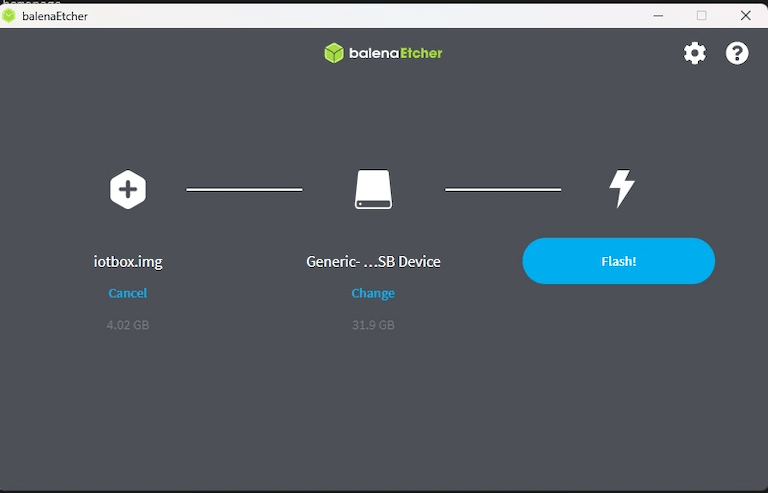

Updating (IoT)¶
Due to the complexity of the IoT box, and virtual Windows IoT box, the term ‘updating’ can mean several different things.
The actual drivers can be updated, the core code on the IoT box can be updated, or a new image can be flashed (using a physical IoT box).
This document explores the various ways to update IoT boxes to ensure smooth operation of IoT box processes and devices.
Flashing the SD card on IoT box¶
Important
This update does not apply to the Windows IoT box (Odoo 16 and higher).
To update the Windows IoT, first, uninstall the previous version of the Odoo Windows program, and then reinstall it using the most up-to-date installation package.
To begin the installation, navigate to the Odoo 16 (or higher) installation package for Enterprise or Community - Windows edition, at Odoo’s download page.
In some circumstances, the IoT box’s micro SD Card may need to be re-flashed with Etcher software to benefit from Odoo’s latest IoT image update. This means the Odoo IoT box software may need to be updated in instances of a new IoT box, or when a handler’s update, or an update from the IoT box home page, does not resolve issues.
Note
It is often necessary to re-flash the IoT box’s image after upgrading the Odoo database to a new version.
A computer with a micro SD card reader/adapter is required to re-flash the micro SD card.
First, begin by downloading Etcher. It is a free, open-source utility, used for burning image files onto drives. After the download completes, install and launch the program on the computer.
Then, download the latest IoT image from nightly, which will be labeled as iotbox-latest.zip. This
particular image is compatible with all supported versions of Odoo.
After this step is complete, insert the IoT box’s micro SD card into
the computer or reader. Open Etcher, and select Flash from file, then find and select
the iotbox-latest.zip image and extract it. Next, select the drive the image should be burned to.
Lastly, click Flash, and wait for the process to finish.
Tip
Balena’s Etcher software also allows for the administrator to flash the SD card from a URL. To flash from a URL, simply click Flash from URL, instead of Flash from file.
Then, enter the following: http://nightly.odoo.com/master/iotbox/iotbox-latest.zip.
Note
An alternative software for flashing the micro SD card is Raspberry Pi Imager.
Windows IoT update¶
Windows virtual IoT box may occasionally need an update to work properly.
The following processes cover the uninstallation and re-installation of the Windows virtual IoT box.
Uninstalling Windows IoT¶
Prior to upgrading the Windows virtual IoT box, the previous version should be uninstalled first.
Important
Before uninstalling a previous version of the Windows virtual IoT box, ensure that there is a newer version of Windows virtual IoT box available, compared to the version currently installed. To do so, navigate to the Odoo Nightly builds page.
On the Odoo Nightly builds page, navigate to to view the date next to the odoo_(version).latest.exe file; where
(version) is equal to the version of Odoo (e.g. 16.0, 17.0). The latest version of the Windows
virtual IoT box can be downloaded by selecting this file, or it is
always available at the Odoo Download page.
Uninstalling the Windows virtual IoT box is done through the Windows program manager.
On any version of Windows, search for program to open the section of the Control Panel. Then, select Uninstall or change
a program. Next, search for Odoo, and click the … (three dot) menu on the
Odoo.exe program to uninstall.
Confirm the uninstallation, and follow the steps to uninstall through the Odoo uninstall wizard.
Download and re-install¶
The latest version of the Windows virtual IoT box can be downloaded from the Odoo Nightly builds page or it is always available at the Odoo Download page.
To download from the Odoo Nightly builds page, navigate to to and select the odoo_(version).latest.exe file; where
(version) is equal to the version of Odoo (e.g. 16.0, 17.0).
To download from the Odoo Download page, find the section for the version of Odoo (e.g. 16.0, 17.0), and select the Download button for Windows.
Next, install and setup the downloaded Odoo .exe file. After the instructions screen, click
Next to start the installation, and agree to the TOS.
During the next step of the re-installation, select Odoo IoT from the Select the type of install drop-down menu.
Example
For reference, the following should be installed:
Odoo server
Odoo IoT
Nginx WebServer
Ghostscript interpreter
Ensure there is enough space on the computer for the installation, then click Next.
Set the destination and complete the installation¶
To complete the re-installation, select the Destination Folder, and click Install.
Warning
Choosing C:\odoo as the install location allows for the Nginx server to start. Odoo’s
Windows virtual IoT box software should not be installed inside
any of the Windows user’s directories. Doing so does not allow for Nginx to initialize.
The installation may take a few minutes. When complete, click Next to continue.
Then, ensure that the Start Odoo box is checked, and click Finish. After
installation, the Odoo server runs, and automatically opens http://localhost:8069 on a web
browser. The webpage should display the IoT box homepage.
Tip
A restart of the Windows IoT program may be necessary if the web browser does not display anything.
Update from the IoT box home page¶
In the background, the IoT box uses a version of Odoo code to run and connect to the Odoo database. This code may need to be updated in order for the IoT box to operate effectively. This operation should be completed on a routine basis, to ensure the IoT system, and its processes, stay up-to-date.
Go to the IoT box home page by navigating to , and clicking on the IP address of the IoT box. Then, click on Update (next to the version number).
If a new version of the IoT box image is available, an Upgrade to _xx.xx_ button appears at the bottom of the page. Click this button to upgrade the unit, at which point the IoT box flashes itself to the newer version. All of the previous configurations are then saved.
Important
This process can take more than 30 minutes. Do not turn off, or unplug, the IoT box, as it would leave it in an inconsistent state. This means the IoT box needs to be re-flashed with a new image.

Handler (driver) update¶
There may be some instances where drivers or interfaces need to be updated for individual devices (e.g. scales, measurement tools, etc.). The IoT handler’s (drivers and interfaces) code can be modified by syncing them with the configured server handler’s code.
This can be helpful in instances where IoT devices (e.g. scales, measurement tools, etc.) are not working properly with the IoT box.
For both the Windows IoT (Odoo 16 and higher) and physical IoT box, this process can be performed manually from the IoT box home page. Go to the IoT box home page by navigating to , and clicking on the IP address of the IoT box.
Next, click Handlers list, and then select Load Handlers at the bottom of the page.

Important
Handler’s code is fetched from the configured server, and it needs to be up-to-date to have the latest fixes and patches.
Note
A handler update is also performed automatically each time the IoT box is restarted. The only exception to this process is if the Automatic drivers update is unchecked in the form view of the IoT box on the Odoo server. This setting can be reached by going to .